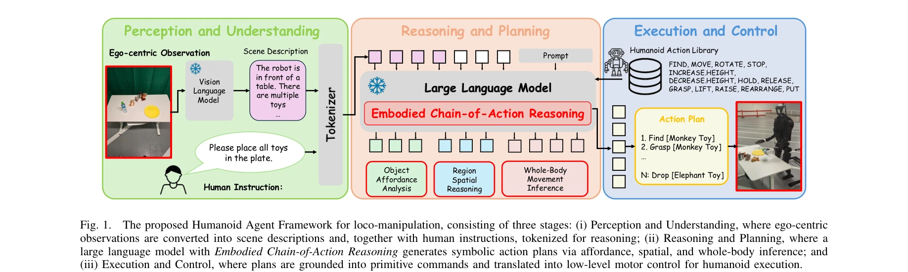

저자: Congcong Wen, Geeta Chandra Raju Bethala, Yu Hao, Niraj Pudasaini, Hao Huang, Shuaihang Yuan, Baoru Huang, Anh Nguyen, Mengyu Wang, Anthony Tzes, Yi Fang | 날짜: 2025-04-13 | URL: https://arxiv.org/abs/2504.09532

Fig. 1.
인형로봇의 전신 보행-조작을 위해 기초 모델의 추론 능력과 Embodied Chain-of-Action (CoA) 메커니즘을 통합한 제로샷 에이전트 프레임워크를 제시한다. 고수준 인간 지시를 affordance 분석, 공간 추론, 전신 동작 추론을 통해 체계적인 보행 및 조작 원시 동작 수열로 분해한다.
Fig. 1.
Fig. 1.
총평: 본 논문은 Foundation model의 추론 능력을 인형로봇 보행-조작에 처음 통합한 의미 있는 기여이며, CoA Reasoning 메커니즘을 통해 자연어 지시를 물리적으로 실현 가능한 동작 수열로 변환하는 새로운 접근을 제시한다. 실제 인형로봇에서 강건한 제로샷 일반화를 입증한 점에서 높은 실용적 가치를 갖는다.